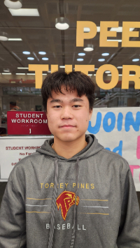
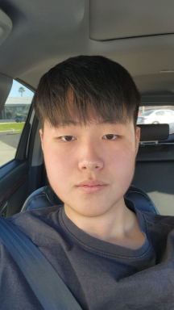

Kei Tashiro
President
Kei is a senior who excels in Calculus and Statistics. He enjoys helping students understand complex math concepts.

Dong Yeop Lee
Vice President
D.Y. is passionate about Biology and Chemistry. He helps students with lab reports and exam prep.